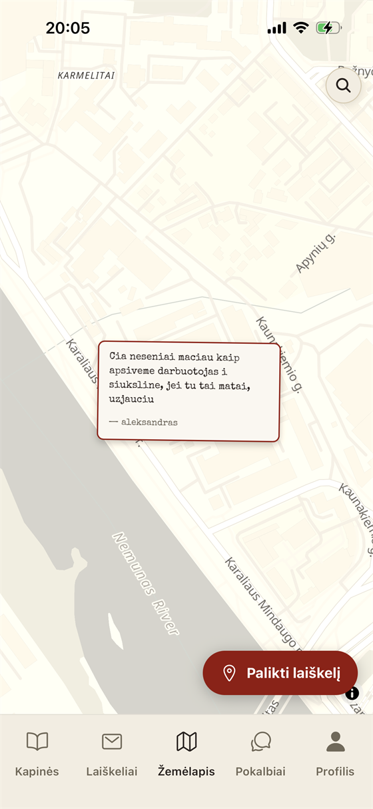
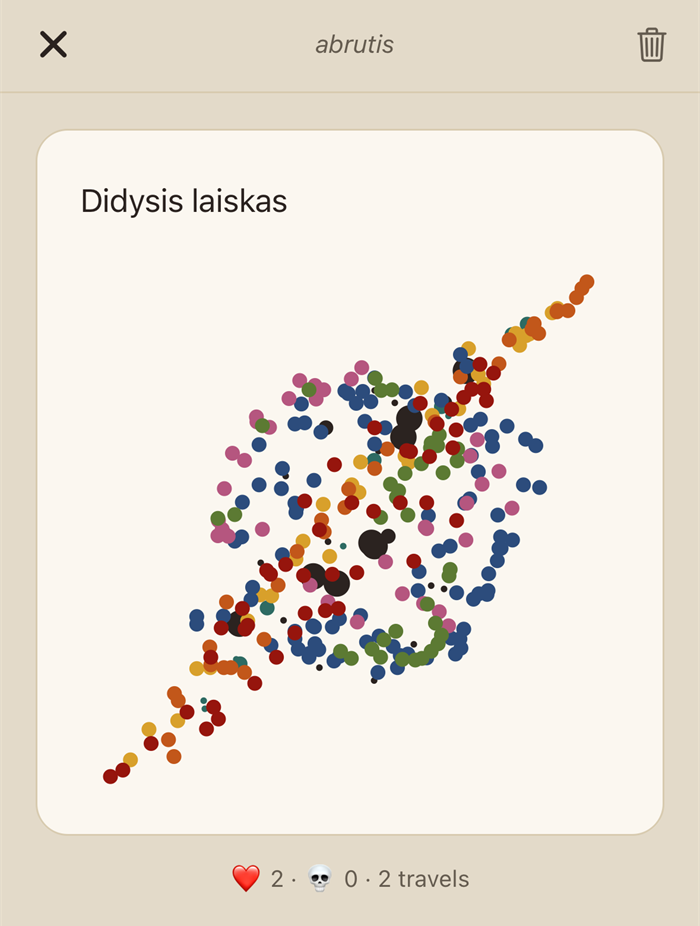
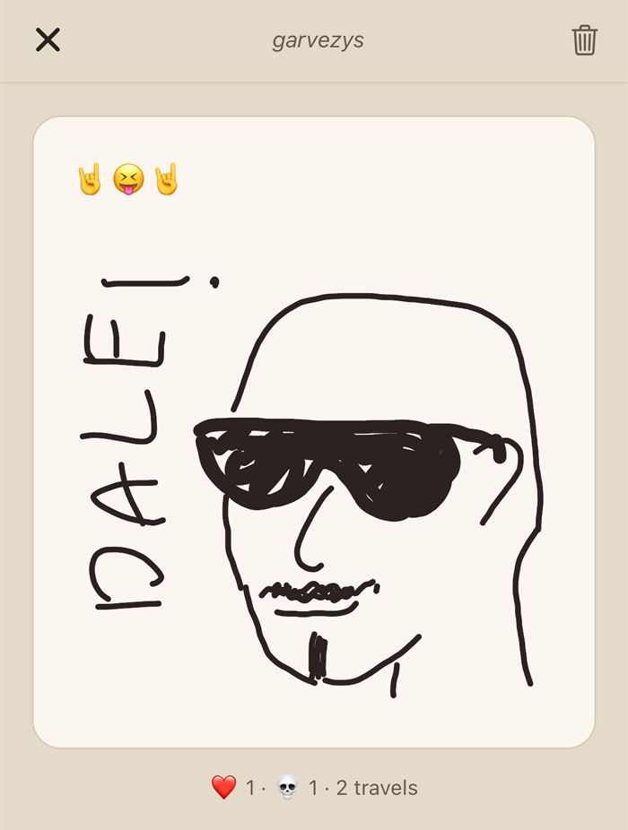

Before it was this
On 23 June 2026 the base of this was a previous attempt at a micro-learning app designed to act as a substitute to mindless social media. React, Supabase, auth, tabs, a settings screen, design modes assembled into a stack that worked well, but an idea that is not easily fulfillable solo. Having copied and put that project on hold indefinitely, soon I unexpectedly came up with something entirely different, and on the same day, a new inhabitant moved into this same house.
Nothing was thrown away that didn't need to be: the auth, the hosting, the CRUD patterns and the deployment path all carried over. No need to restart everything for no reason, is there?
Two ideas combined
Anonymous letters sent out to strangers is not such a new idea, in fact, there is a recorded message in a bottle all the way from 1886. Temporary messages pinned to a place on the map in order to reach someone has also been done. Both had been executed separately, and neither had gained traction in the form encountered. I do not intend to pretend to have created something new, but instead show the importance of good combination and execution.
The map is the public, browsable surface; the random pool is the private, intimate one. Each one gives the other something it can't produce alone: the map gives strangers a reason to look, the pool gives them a reason to feel personally interacted with.
Chasing an unseen idea is a kind of a dream most 'idea-havers' have, but it can lead an innovator into a bit of a despair. Even the best ideas will fall short of expectations if they aren't executed to their fullest potential. Well, I digress anyway.
The look came first
Bone on brick. Warm paper texture, typewriter type, an envelope you actually open. Let's see Paul Allen's card.
This was decided early and treated as the entire premise rather than just a skin. Minimalism had become the default — every app arriving at the same white (or, now, dark mode) rectangle — and nobody actually wants any more of it. The aesthetic here is the product's argument: if you're leaning on a 'feel', why would you kill it with modern 'technolog-y' designs, rather than what worked for hundreds years? We still associate letters with paper, not a clear glass-like design bubble.
The same reasoning produced the ceremony: envelope open and close animations, sounds, and haptics at the emotional peaks — sending, receiving, liking, dying. Apps in 2026 are lifeless because content density and instant gratification pushed animation, sound and haptics out entirely. The standard user often doesn't notice when something is gradually lost, but it adds to the general perception in big ways. The envelope tear and letter pullout ceremony is what separates the letters from just text boxes sent around.
Nobody wants mail they didn't ask for
When the app began the testing phase, I did get some questions about why there isn't an inbox for the letters, and others didn't even realize you have to push a button to get letters. That was, of course, my fault — the then implemented tip system was trivial and failed to instruct the user on how it works. That was one of the biggest changes that occured during the testing phase.
But why no inbox?
Well, who even wants to simply get non-stop mail in their inbox in 2026? Actually, who wanted it in 2006, for that matter. Unsolicited arrival is the thing that turned every inbox into just an annoying notification, and asking for a letter is what makes getting one feel like a gift, not a newsletter you signed up for when you were entering a giveaway at 12 years old.
No inbox also produces another effect: there is no unread count, no badge, and no overloaded notification center. One decision removed three features. Three features that are all intended to keep the user on edge and force them to check the app all the time. Nobody wants to be pestered for that. Laiskelis is intentionally relaxed. It's not your work Outlook.
Product (letter) scarcity
... is a marketing technique used in various ways to force the user in believing they might miss out on a limited offer. It can be really, really annoying, especially with time limits and "9 people are looking at this right now", and "last two products", and "last time to get in on the offer of your lifetime!" (a la Ryanair). Laiskelis is not, and will not be annoying. So the app doesn't pretend you just got a limited time offer on a letter. But pacing was implemented, to achieve two goals at the same time — to maintain the relaxed atmosphere of the app and prevent spam (or really excited writers) from overwhelming others.
The system works in such a way that a letter in the 'sent' pool is redeemed by anyone who wants it, but can only reach one person per hour. This ensures that if three guys on the sofa are writing their best work on the app, and they're the only users at the time, they won't consume each other's work immediately and make them feel like the user base is inactive. Only one person can receive it, and then, after the time limit, the next person is likely to be someone else entirely, and the original group is offline by then.
The mechanic
Originally every letter had a ceiling on how many distinct people could ever receive it, and a like bought exactly one more reader. If one person liked it, another gets to see it. Compounding reach — a well-liked letter accelerating and reaching double or triple the users — was considered and rejected, because on a small pool it is unecessary and might even be unfair.
However, after implementing the previously mentioned pacing, the letter reach cap was removed, because the pacing keeps letters scarce in time, which is the dimension that matters. A hard ceiling on readers additionally caps how far a genuinely good letter can go, which is the opposite of the point.
Dislikes (send to the obituary!) kept their job, with a deliberately high bar: a letter dies early only at three or more dislikes and more dislikes than likes. Thought-provoking material — and its opposite, the funny and post-ironic — is far more hit-and-miss than universal material, and that is exactly what this app exists to make thrive. A couple of dislikes for an odd joke must not be enough to kill a letter someone might really enjoy.
Seven days, because that's how long post takes
Pool letters live seven days. Not because seven is some type of technical number I was forced to pick, but because unregistered post in real life takes about five working days to arrive. The app's sense of time is borrowed from the physical thing it's imitating, as well as the feel of getting and sending letters. Well except it doesn't cost a dime (and doesn't get lost, either)
Map letters live thirty days, to ensure they get a chance to be found by the person they're directed at.
The safety model
Keyword scoring. A letter is scored on send; over threshold, the send is rejected. Bad words are rated in points rather than a binary list, because a few rough words sometimes are the art, and a blocklist can't tell a rough sentence from slur-spam, while a points system certainly can avoid misuse of 'creative channeling'.
The rejection is shown to the author. Everyone knows the feeling of a Reddit post removed without explanation, a job application that never gets an answer, an Instagram report that results in 'we did nothing' with no explanation. Silent moderation is cheaper for the operator and worse for the person. Shadow-banning was rejected outright, and so was machine moderation — deterministic scoring plus human judgment, nothing else. Also, the offender should be informed of their faults, on the off-chance it might make them decide to do better...
The Obituary is personally curated. Only expired letters that pass manual review reach the public feed, because an auto-filled feed becomes a rubbish bin — kind of like what happened to Facebook. There is a caveat — human review is subjective. In order to prevent myself from leaning too hard on personal opinion, I decided that highly-liked letters go through regardless of the curator's personal opinion.
No GPS. Map letters are placed by deliberately tapping the place on a map. There is a search function for anything in particular. Some users would genuinely appreciate a button that jumps to where they are (one tester asked for it specifically), but I chose not to include GPS anyway because data you never request is one that can never leak, be subpoenaed, or be repurposed. Also it's a bad look for a privacy app to ask for your location. "Letters near you" would make for an engaging notification, but it's also kind of like "Single women in your area", which isn't the look Laiskelis is going for, anyway.
Anonymous to other users, not to the system. Unfortunately, a truly anonymous app is not only risky but also bears the risk of developing a criminal or abuse environment. And spam. Accounts are email and password. The email is never shown, never used for messaging, never surfaced; other users see a nickname and a chosen emoji avatar and nothing else. The honest framing is that anonymity here is a promise made between users, not a claim that the operator holds no record. Nickname-only accounts were rejected because signing out would mean a destroyed identity with no way to prove you were ever that nickname. And spam.
Avatars. Anonymity shouldn't mean facelessness. You can stay completely anonymous and still be the person with the little green frog. It's the one feature that adds identity to the product built on its absence.
The map was never planned
The app was the random pool of letters and the obituary. Map letters were built later as an additional feature — and became the definitive feature. They're the part that's actually beautiful to sit and look at, and the part with an obvious public surface to show people.

Worth writing down for the next project: do not be afraid to stray from the original idea.
The map got its own rules, all of them narrower than the pool's. No dislikes, no leaderboard, no reach mechanics — likes there are a quiet appreciation counter that notifies the author. There isn't a competition for attention, as the map letters are designed for a particular one person who knows the location anyway.
Crayons
All letters can carry a crude drawing instead of, or alongside, its text.


Drawings are stored as the strokes that made them — points, palette index, nib width — and re-rendered on the client. A few kilobytes per picture: no storage bucket and its policies, no egress against a free tier that has to stay free, no upload that can half-fail between the row and the file, nothing orphaned to sweep when a letter expires, and a picture that stays sharp at any size. Colours are stored as palette indices, so the crayons can be re-tinted later without repainting every drawing ever made. Flattening to a PNG would have bought truer texture — with infrastructure, running cost, and failure modes attached.
There was a detour: an earlier version, in an intent to maintain the cozy feel of the app, rendered a real wax-crayon look, blur pass and grain mask and all. It was beautiful and it was too resource heavy on devices. It got scrapped for plain lines. Sometimes technical and monetary restraints force you to make compromises.
It's still fun to draw, though. The toolset is eight colours, three nib sizes, undo, clear. No eraser, fill, layers, shapes or zoom — not as a shortcut, but because the picture is meant to be a scribble in the margin. Every tool added is a tool that makes you expect more of yourself. Trust the cute scribble.
Paintings did introduce a weak point, recorded as such: the keyword gate can't see a drawing (obviously). Drawings are governed by the report flow only (and the developer actively moderating as well). The alternative was hand-approving every map drawing — but who really likes waiting for approval?
The compromise on notifications
The original premise was a silent app, with no inbox, no badges, no digests, no streaks — like an avoidant person, so you remember to open the app on your own volition. Addictive app behaviour has moved on from "keep your streak" to a really crazy volume: so many channels shouting at once that the user stops wanting the thing at all.
That couldn't stay, though — too many testers genuinely asked to get notified. I made the realization that that bombardment is now expected. Users have gotten used to it and learned to sift signal from clutter, and an app that says nothing at all just becomes a nuisance and adds discomfort. Well, according to the testers, anyway.
So a small, fixed set exists: your letter hit a milestone, your letter died, your letter made the Obituary, and one gentle reminder about available letters that is only ever sent when there is actually a letter waiting for you. Never an invitation to come back and scroll.
Other stuff the test users changed
Four reversals, all of them from watching someone else use it.
Likes became undoable. A like used to be permanent, on the theory that your first impression is the honest one. The objection that changed it hadn't been considered: people rush to like before finishing the letter, and then something in the remaining text sets them off.
Onboarding stopped being reading. As mentioned before, the tip system needed work — at first, there was a full-screen welcome letter and dismissible banner tips. The texts were written well, but nobody reads those — one test user didn't even know the app is anything other than the map. All passive teaching was replaced with doing: at first open, a spotlight tour begins that dims the screen around one real control at a time and is dismissed only by performing the action it points at. The premise text survived intact, but moved inside the mechanic — it now arrives as your guaranteed first received letter, through the real envelope ceremony, from the founder. Which also means the very first press of "receive" can never land in an empty pool and kill the moment (call that 'deletion at first sight').
Lithuania only
Before anyone asks — international expansion was always an option, and still is, but I firmly believe that a personal app like this should cater to each community individually, have locally translated contemporary language... A soulless app attempting to cater to the whole Earth will win nowhere on it.
What success means for this project
Daily active users was rejected as a north star specifically because it measures the exact behaviour the product is designed not to produce. An app optimising for daily returns needs the streaks, digests and badges that were all explicitly refused. Choosing DAU would mean grading the app on how well it failed at its own thesis.
For a personal project, I see its success personally:
- Strangers talking about it. The moment discussion leaves the circle of people who tried it because they know me, the thing exists on its own.
- Two people connecting by accident, even briefly. Due to the anonymous premise, I will probably never know if a genuine connection happened among two random strangers, but that's okay. It's the goal for an anonymous stranger app anyway.
Also, passion project truly finished is a feat in itself.
The campaign
To be written before and during launch — the plan, and the record of how „Laiškelis“ was put in front of people who don't know me, which is the whole of success criterion #1 above.
What actually happened
To be written some time after release, once there's enough distance to tell a result from a spike.